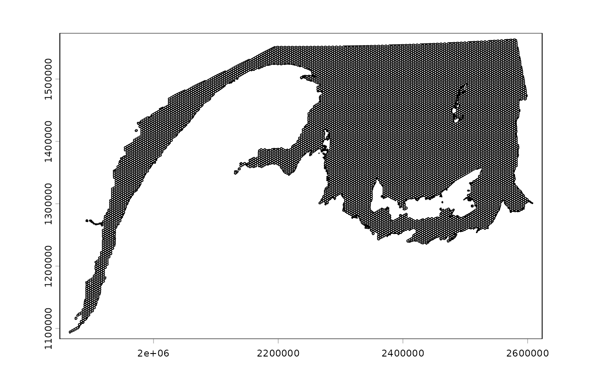
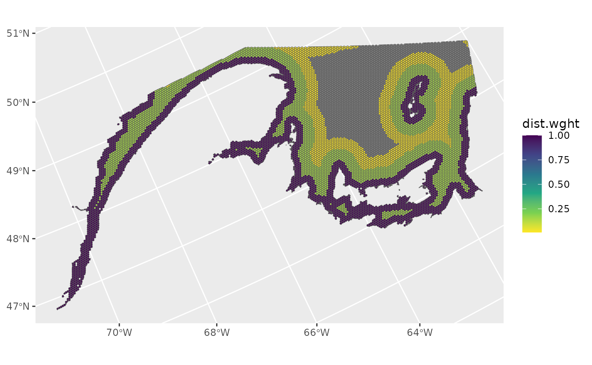
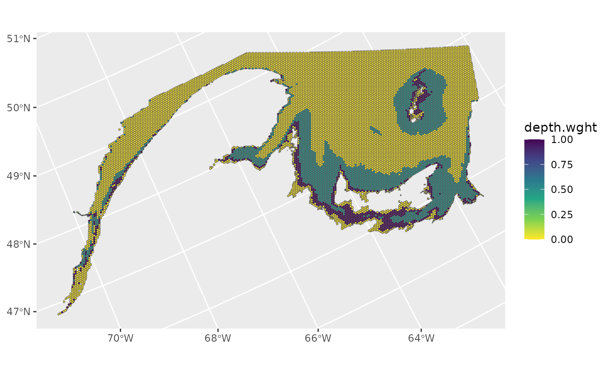
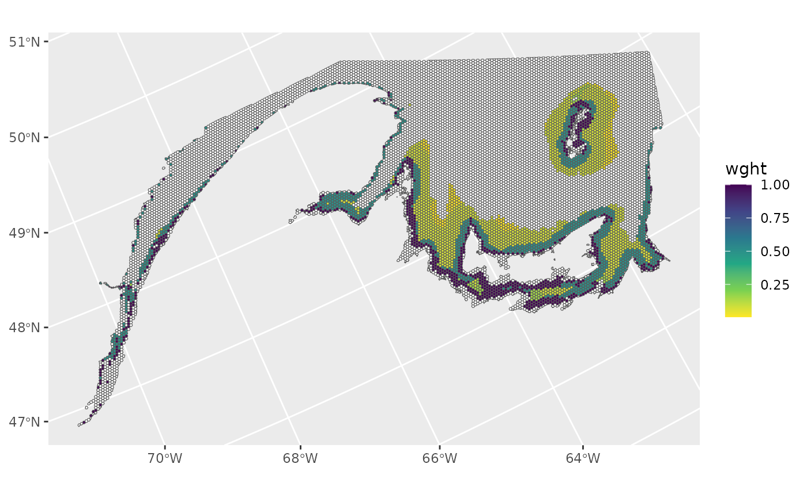

Distribution of sampling weights
Source:vignettes/distribution_of_sampling_weights.Rmd
distribution_of_sampling_weights.RmdOverview
This vignette shows step-by-step examples of how to distribute hypothetical sampling weights over a reference spatial grid.
First, sampling weights are generated based on distance from the shoreline. Spatial grid cells within 10 km, 30 km, and 50 km of the shoreline are assigned sampling weights of 1, 0.15, and 0.01 respectively. Grid cells beyond 50 km are assigned sampling weights of 0.
Next, sampling weights are generated based on depth. Spatial grid cells that have median depths of 10-20 m, and 20-50 m are assigned sampling weights of 1 and 0.5, respectively.
Finally, the two different sampling weights area combined to produce a single sampling weight for each spatial grid cell.
Load SWIM example shapefiles
These files are stored on Zenodo at https://zenodo.org/records/18165445.
sw_example_shapefiles(FALSE) #TRUE will create a folder to save these files in your working directory
#> Fetching SWIM example shapefiles from https://zenodo.org/records/18165445.
#> ℹ Successfully fetched list of published records - page 1 (size = 10)
#> ✔ Successfully fetched list of published records!
#> ✔ Successfully fetched record for id '18165445'!
#> Found 6 files in zenodo record 18165445
rm(buffer10,buffer30,buffer50,nafo_4t)#We only need some of them for this vignette
ls()
#> [1] "coast_coarse" "ref_grid"Examine the reference spatial grid
The reference spatial grid used here originated from Koropatnick & Coffen-Smout (2020). It was cropped to the Northwest Atlantic Fisheries Organization (NAFO) Division 4T, and a median depth was assigned to each grid cell based on the General Bathymetric Chart of the Oceans (GEBCO) 2024.
ref_grid
#> class : SpatVector
#> geometry : polygons
#> dimensions : 11124, 5 (geometries, attributes)
#> extent : 1864640, 2608453, 1092588, 1564352 (xmin, xmax, ymin, ymax)
#> coord. ref. : Canada_Albers_Equal_Area_Conic (ESRI:102001)
#> names : OBJECTID GRID_ID depth.med nafo area
#> type : <num> <chr> <num> <chr> <num>
#> values : 2.57e+05 ATD-1220 9.867 4T 7.84
#> 2.581e+05 ATE-1219 4.908 4T 8.762
#> 2.581e+05 ATF-1219 10.57 4T 9.833
plot(ref_grid)
Distance from shoreline sampling weights
Spatial grid cells within 10 km, 30 km, and 50 km of the shoreline are assigned hypothetical sampling weights of 1, 0.15, and 0.01 respectively. Grid cells beyond 50 km are assigned sampling weights of 0.
buffers<-c(50,30,10)#km
weights<-c(0.01,0.15,1)
ref_grid$dist.wght<-0
for(i in 1:length(buffers)){
buf<-buffer(coast_coarse,buffers[i]*1000)
index<-intersect(ref_grid,buf)
ref_grid[which(ref_grid$OBJECTID%in%index$OBJECTID),'dist.wght']<-weights[i]
}
ref_grid
#> class : SpatVector
#> geometry : polygons
#> dimensions : 11124, 6 (geometries, attributes)
#> extent : 1864640, 2608453, 1092588, 1564352 (xmin, xmax, ymin, ymax)
#> coord. ref. : Canada_Albers_Equal_Area_Conic (ESRI:102001)
#> names : OBJECTID GRID_ID depth.med nafo area dist.wght
#> type : <num> <chr> <num> <chr> <num> <num>
#> values : 2.57e+05 ATD-1220 9.867 4T 7.84 1
#> 2.581e+05 ATE-1219 4.908 4T 8.762 1
#> 2.581e+05 ATF-1219 10.57 4T 9.833 1
ggplot()+
geom_spatvector(data=ref_grid,aes(fill=dist.wght))+
scale_fill_viridis_c(direction=-1)
Depth sampling weights
Spatial grid cells that have median depths of 10-20 m, and 20-50 m are assigned hypothetical sampling weights of 1 and 0.5, respectively. All other grid cells are assigned sampling weights of 0.
start.depths<-c(10,20)
stop.depths<-c(20,50)
weights<-c(1,0.5)
ref_grid$depth.wght<-0
for(i in 1:length(start.depths)){
index<-which(ref_grid$depth.med>=start.depths[i]&ref_grid$depth.med<stop.depths[i])
ref_grid[index,'depth.wght']<-weights[i]
}
ggplot()+
geom_spatvector(data=ref_grid,aes(fill=depth.wght))+
scale_fill_viridis_c(direction=-1)
Combine sampling weights
In this hypothetical example, the distance from shore and depth sampling weights are multiplied to produce a single sampling weight for each grid cell.
ref_grid$wght<-ref_grid$dist.wght*ref_grid$depth.wght
#for plotting purposes, change values of zero to NA
ref_grid[which(ref_grid$wght==0),'wght']<-NA
ggplot()+
geom_spatvector(data=ref_grid,aes(fill=wght))+
scale_fill_viridis_c(direction=-1,na.value = 'white')